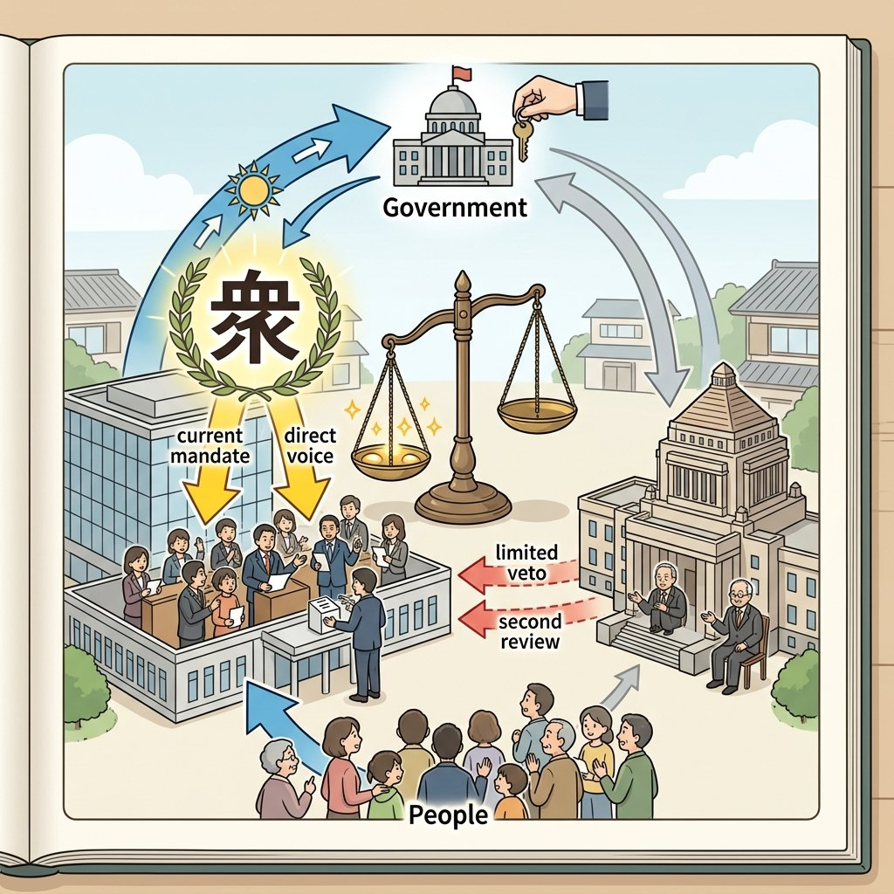

公民・第2章（第5単元）
5. 国会 ─国の立法機関─
日本国憲法のもとで、私たちが選んだ代表者が集まって法律や予算を決める場が「国会」です。国会は国の政治を動かす上で極めて強力な権限を持っており、独自の組織ルールが敷かれています。今回は、国会の地位や、衆議院・参議院の違い、そしてテスト対策で最も記述問題として狙われやすい「衆議院の優越」について詳しく解説します！
1. 国会の地位と「二院制（にいんせい）」
日本国憲法第41条で、国会は国権の最高機関であり、国の唯一の立法機関と定められています。国会だけが、私たちの代表として新しい法律を作ることができます。
① 衆議院と参議院の比較（二院制）
日本の国会は、慎重に審議を行って誤りを防ぐため、衆議院（しゅうぎいん）と参議院（さんぎいん）の２つの議院からなる二院制（両院制）をとっています。
| 比較項目 | 衆議院 | 参議院 |
|---|---|---|
| 定数 | 465名 | 248名 |
| 任期 | 4年（ただし途中で解散あり） | 6年（3年ごとに半数が交代、解散なし） |
| 被選挙権（立候補年齢） | 満25歳以上 | 満30歳以上 |
2. 衆議院の優越（しゅうぎいんのゆうえつ）
衆議院と参議院で意見が一致しなかった場合、または参議院が決定を行わない場合、衆議院の議決が国会の議決とされる仕組みを衆議院の優越と呼びます。
① 優越が認められる事項
- 予算の議決・条約の承認・内閣総理大臣の指名：
両院の意見が一致せず、両院協議会を開いても解決しない場合、衆議院の議決がそのまま国会の議決になります。また、予算は必ず先に衆議院へ提出しなければなりません（予算の先議権）。 - 法律案の議決：
衆議院で可決し参議院で異なる議決をした場合、衆議院で出席議員の3分の2以上の賛成で再可決すれば、法律として成立します。 - 内閣不信任決議の提出：
衆議院のみに認められた非常に強力な権限です。
◆ なぜ衆議院の優越が認められているのか？（超頻出記述！）
衆議院は参議院に比べて「任期が短く、途中で解散がある」ため、より強く最新の国民の意見（世論）を反映していると考えられるからです。

図1：衆議院と参議院の意見が対立した際、国民の声をより強く反映する衆議院の意思が優先されるイメージ
3. 国会の種類と様々な権限
① 国会の４つの集まり（種類）
国会が召集される時期や目的によって、以下の４つの種類に分かれます。
- 常会（じょうかい・通常国会）：毎年1回、1月に必ず召集されます。会期は150日間で、主に翌年度の予算を審議します。
- 臨時会（りんじかい・臨時国会）：内閣、または衆参いずれかの総議員の4分の1以上の要求があった場合に召集されます。
- 特別会（とくべつかい・特別国会）：衆議院の解散に伴う総選挙の後、30日以内に召集されます。ここで内閣総理大臣の指名が行われます。
- 参議院の緊急集会：衆議院が解散されている間に、国に緊急の必要が生じた場合、内閣の求めによって参議院のみで開催されます。
② 国会の重要権限
- 法律の制定と予算の議決（国の収入と使い道を決める）。
- 条約の承認（他国との約束の承認）。
- 内閣総理大臣の指名。
- 憲法改正の発議：各議院の総議員の3分の2以上の賛成で発議し、国民投票へかけます。
- 弾劾裁判所（だんがいさいばんしょ）の設置：問題を起こした裁判官をクビにするかを決めるため、国会議員で構成する裁判所を設置します。
- 国政調査権（こくせいちょうさけん）：国の政治全般について、証人を呼んで調べることができる権利。
🔥 この単元のテスト対策・暗記のコツ
-
★
衆議院の優越の「理由」の記述対策：
・記述：「なぜ予算の議決などにおいて、衆議院の優越が認められているのか。衆議院の特徴をふまえて説明しなさい。」
・解答：「衆議院は参議院より任期が短く、途中で解散があるため、より国民の意思を強く反映していると考えられるから。」 -
★
法律案の再決議と憲法改正発議の分数の違い：
・法律案の衆議院での再可決 ＝ 「出席議員の3分の2以上」の賛成。
・憲法改正の発議（両院） ＝ 「総議員の3分の2以上」の賛成。
※「出席議員」か「総議員」かの違いが、入試問題の選択肢で頻繁に引っ掛けに使われます！ -
★
国会の2大用語の暗記：
・憲法第41条の「国権の最高機関」「国の唯一の立法機関」は、そのまま穴埋めで非常によく出ます。漢字で書けるようにしておきましょう。